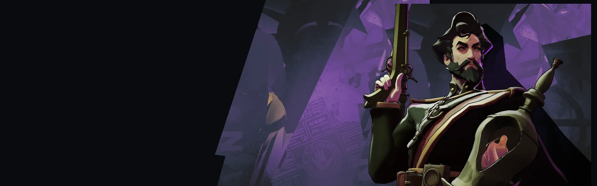
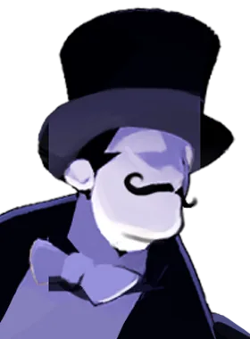
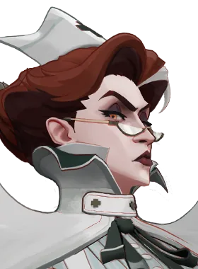

Escaravelhos de Fogo Fire Scarabs Infesta um inimigo com escaravelhos que roubam sua vida e reduzem o dano que ele causa.
Redemoinho de Poeira Dust Devil Vira um redemoinho que avança ferindo, retardando e erguendo inimigos, e depois dá evasão de balas.
Marca do Djinn Djinn's Mark Tiros aplicam marcas que causam dano espiritual e revelam o alvo ao expirar ou serem consumidas. Ativa, consome todas as marcas de uma vez. Viajante Traveler Teleporta Mirage a um local do minimapa após uma breve espera, interrompida se ele sofrer dano.Assassino ágil, ótimo para flanquear e sumir da luta.
História
Os Djinn são um dos grupos de pessoas mais curiosos do mundo moderno. Possuindo grande poder em doses controladas, os Djinn são incapazes de manter a forma corpórea por mais de 48 minutos sem descansar dentro de um recipiente. Como resultado, a maioria dos Djinn emprega guarda-costas humanos para transporte, proteção e companhia.
Mirage é um desses guarda-costas. Empregado pelo embaixador Djinn Nashala Dion, Mirage está em Nova York em missão diplomática. A esperança dos Djinn é que possam negociar com o governo dos EUA a venda de parte do Wyoming para que possam construir uma nação soberana para o seu povo.
História oficial do jogo, traduzida automaticamente para o português.
Números reais
Habilidades
Infesta um inimigo com escaravelhos que roubam sua vida e reduzem o dano que ele causa.
Vira um redemoinho que avança ferindo, retardando e erguendo inimigos, e depois dá evasão de balas.
Tiros aplicam marcas que causam dano espiritual e revelam o alvo ao expirar ou serem consumidas. Ativa, consome todas as marcas de uma vez.
Teleporta Mirage a um local do minimapa após uma breve espera, interrompida se ele sofrer dano.
Builds mais usadas
6.563 partidas registradas com esta build.
Regeneração Mística (800) · Rodadas de Abertura (1.600) · Healbane (1.600) · Recarregando corrida (1.600) · Vulnerabilidade Mística (1.600) · Recarga Mercúrio (1.600) · Revista Titânico (1.600) · Atacante Rápido (1.600) · Vigor Extra (800) · Regeneração Extra (800)
5.684 partidas registradas com esta build.
Rodadas Monstruosas (800) · Regeneração Mística (800) · Resfriamento da compressão (1.600) · Supressor (1.600) · Healbane (1.600) · Vulnerabilidade Mística (1.600) · Revista Titânico (1.600) · Dissipar Magia (3.200) · Balas Tóxicas (3.200) · Reforço de tiro na cabeça (800)
4.519 partidas registradas com esta build.
Reforço de tiro na cabeça (800) · Regeneração Mística (800) · Espírito Extra (800) · Tiro Místico (1.600) · Healbane (1.600) · Rodadas Monstruosas (800) · Supressor (1.600) · Vigor Extra (800) · Maestria de Vigor (3.200) · Vulnerabilidade Mística (1.600)
Confrontos reais
 Pocket — 50.3% de vitória
Pocket — 50.3% de vitória Shiv — 49.7% de vitória
Shiv — 49.7% de vitória
Sinclair — 49.5% de vitória Warden — 49.4% de vitória
Warden — 49.4% de vitória Viscous — 49.0% de vitória
Viscous — 49.0% de vitória Paradox — 48.8% de vitória
Paradox — 48.8% de vitória
 Rat King — 36.9% de vitória
Rat King — 36.9% de vitória Graves — 37.0% de vitória
Graves — 37.0% de vitória Paige — 37.9% de vitória
Paige — 37.9% de vitória Victor — 40.5% de vitória
Victor — 40.5% de vitória Seven — 40.6% de vitória
Seven — 40.6% de vitória
Nurse Harrow — 40.9% de vitória
Ver a página de counters do Mirage
O que upar primeiro
Nível por nível, na ordem que os jogadores mais usam em partidas de verdade. A porcentagem mostra quantos escolheram aquela habilidade naquele nível.
Melhores duplas
Heróis que mais ganham jogando junto com ele, em partidas reais (pelo menos 1.500 partidas juntos).
- Paige52,5%
- Rat King52,1%
- Graves52,1%
 Ivy50,3%
Ivy50,3%- Victor50,1%
- Shiv36,5%
- Sinclair38,6%
- Pocket38,9%
Histórico de win rate
14/09: 46.5% → 02/11: 43.7% → 21/12: 46.8% → 08/02: 47.9% → 29/03: 50.7% → 17/05: 47.8% → 05/07: 48.7% → 23/08: 44.3% → 11/10: 44.7%